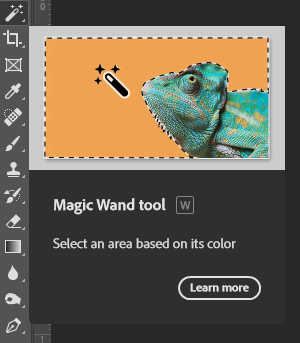

How To Edit Photos
What Software to use?
The most commonly used photography software is Adobe illustrator and Adobe Photoshop
Which one to use?
The main difference between Photoshop & Illustrator is the kind of graphics each application creates, Photoshop creates raster graphics using pixels, while Illustrator creates vector. What is Illustrator: Adobe Illustrator is advanced, vector-based editing software
Main Tools
Here are some tips to get you started on using the basic tools of photoshop.
Magic Wand Tool
he Magic Wand Tool selects a portion of your image that has the same or similar colors.
You can access the Magic Wand Tool by typing “W.” If you don’t see the Magic Wand Tool,
you can access it by clicking on the Quick Selection Tool and selecting the Magic Wand Tool from the dropdown.
Move Tool
The Move Tool does just what it sounds like: It allows you to move items in your image. If you’ve created a selection within your image, you can use the Move Tool to relocate it within the frame. If you don’t have a selection, the Move Tool will move the entire layer.
The Move Tool is the first tool visible in the default Toolbar. You can also access it by typing “V.” The Move Tool shares space with the Artboard Tool, which you will see if you click and hold the Move Tool with the mouse.
Rectangular Marquee Tool and Elliptical Marquee Tool
With either the Rectangular Marquee Tool or Elliptical Marquee Tool selected, click and drag on your image to create your selection. The Rectangular Marquee Tool will create a rectangular selection; the Elliptical Marquee Tool will create an elliptical selection.
Hold down the SHIFT key while you click and drag to create a perfect square (Rectangular Marquee Tool) or perfect circle (Elliptical Marquee Tool). Release the mouse before you release the SHIFT key to keep the exact proportions of your selection.
Lasso Tool, Polygonal Lasso Tool and Magnetic Lasso Tool
The Lasso Tools, like the Marquee Tools, create a selection within your image.
Any of the three Lasso Tools may be visible in the Toolbar; click and hold on the visible tool to access the other Lasso Tools. You can access whichever Lasso Tool is currently visible by typing “L.”
With the Lasso Tool selected, you can draw a selection around any part of your image using your mouse. Click and hold the mouse button down as you draw. End the selection where you began to create a complete selection. The Lasso Tool can be a bit difficult to use if you need a precise selection, but it works well for creating a rough selection.
The Polygonal Lasso Tool creates a selection with straight lines. This tool offers a little more precision than the Lasso Tool. With the Polygonal Lasso Tool selected, click on the point on your image where you want your selection to begin. Release the mouse and click again to create the first straight edge of your selection. Each time you click, you create another edge for your selection. To finish your selection, click on the same spot where you began.
The Magnetic Lasso Tool follows the edge of an object in your image, allowing more control in your selection than the Lasso Tool, and more flexibility than the Polygonal Lasso Tool. To use the Magnetic Lasso Tool, click on the edge of your object where you want your selection to begin, and then follow the object as closely as you can with the mouse. The Magnetic Lasso Tool will snap to the edge of the object as you follow it.
Quick Selection Tool
The Quick Selection Tool selects an object in your image by interpreting and selecting along defined edges visible in your image.
If the Quick Selection Tool isn’t visible in Photoshop CC 2021, click and hold on the Magic Wand Tool and select the Quick Selection Tool from the dropdown. Once the Quick Selection Tool is visible, you can access it by typing “W.”
Object Selection Tool
New to Photoshop 2020, the Object Selection Tool allows you to select an object within your photo simply by drawing a selection around the object.
To access the Object Selection Tool, click and hold on the Magic Wand Tool and select the Object Selection Tool from the dropdown. Once this tool is visible in the Toolbar, you can access it by typing “W.”
Fill Tools
Once you have created a selection with either the Marquee Tools, the Lasso Tools, or the Selection Tools, you can quickly fill that selection with a solid color or a gradient, or use what’s called the Content-Aware Fill Tool to seamlessly remove an object from its background.
The Paint Bucket Tool
The Paint Bucket Tool, sometimes referred to as the Fill Tool, is located on the Toolbar just under the Eraser Tool. If it is not visible, it may be hidden under the Gradient Tool.
To use this tool, select it and click anywhere within your selection. Photoshop will fill all pixels matching the color of the area you’ve clicked on with your foreground color. If you use the tool without creating a selection first, Photoshop will fill all pixels within your entire document with the foreground color. As with other tools, you can adjust settings such as Blending Mode, Opacity, and Tolerance in the Options Bar at the top of the application window.
Gradient Tool
The Gradient Tool, located in the same place as the Paint Bucket Tool, will fill a selection with a gradient instead of a solid color. Unlike the Paint Bucket Tool, however, the Gradient Tool will fill the entire selection with new color, regardless of the underlying pixel colors.
Video Tutorials by GFX-Mentor
GFX-Mentor has made a whole series of photoshop and illustrator tutorials for free including for beginners and even advanced users.